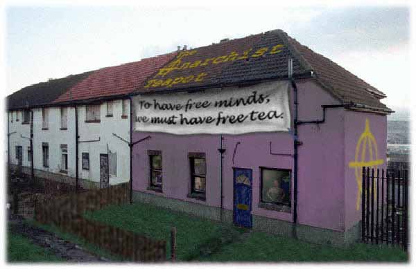

demanding the impossible:
the anarchist teapot

The Anarchist Teapot comprises several autonomous communities in the UK. The Teapot grew from the idea that the act of making tea freely for people (with no hidden agenda) will do something to break down social relations imposed by the capitalist system (by removing money the relation between provider and
consumer is affected).
The Anarchist Teapot is aware of the social ignorance surrounding it's name. Part of the reason the Teapot exists is to provide information about anarchism as a social and political movement, to show that anarchy means a way of living autonomously with no central governmental control, and is not a synonym
for chaos or lawlessness.
The Teapot is a communal living room for anyone not under the influence of drink or drugs to drop in, enjoy a free cup of tea and escape from the 'buy, buy, buy' message that screams out of the town centres in which they are usually based.
The rooms of the Teapot are used as a community café, for video showings and discussions in the evening, a 'long as you like' library from donated books and magazines, and a home for those who live there. The Teapot is a local community rescource, and a hub of cultural activity for the area.
The Teapot is dedicated to the betterment of the local community. Not only physically, by the improvement of empty buildings, but socially too, aiming to improve the poor social relations of our time where people no longer care about their street or town. Anarchism treats local
on equal terms to global, and this is the
Teapot's primary ideology.
Roll the mouse pointer over the numbers for more information.